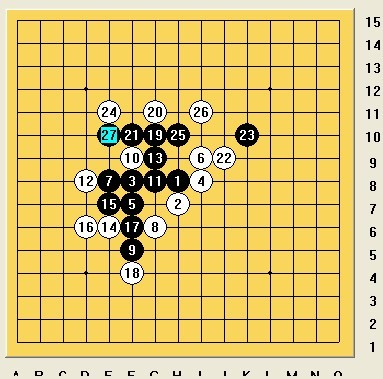
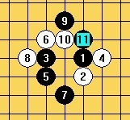
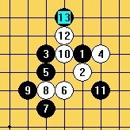
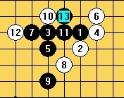
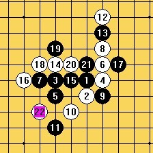

我与曹冬5战—世锦赛模拟训练（下）
#1 我与曹冬5战—世锦赛模拟训练（下） 作者：炫飞冰弦 发表时间：2011-8-15 1:15:40
7 ．27第三战

黑胜曹冬
今天轮到曹冬开局，金星3打，我没理由不换，觉得黑优，以我的控棋能力，杀不掉也能勉强和吧。结果，这个6，让我惊讶万分，照理6只有两种走法，如下图
 
可是，实战的6给我的感觉像考必胜，思考了15分钟左右，尽管没有特别深入的计算，我走出了最强7，曹冬似乎不感到意外，马上活3，嘿嘿，这时我知道自己没走错。10手外挡却是我没有想到的。但经过计算后发现了实战了11,13，下图

之后白棋的活2动不了，冲四再活3也不能形成反击，现在黑棋有4个活2和一个眠三，优势非常巨大。
呵呵，曹东算了半个小时，苦笑着，最后很无奈地把自己地毯了。。。
事后才知道是第六手活错了三，不然就黑白平衡得慢慢下了。

7 ．28第四战
#2 Re:我与曹冬5战—世锦赛模拟训练（下） 作者：炫飞冰弦 发表时间：2011-8-15 1:17:08
 网不好，发的时候一直在默念，不要掉线不要掉线不要发了一半掉线，，然后就真的木有掉线！
网不好，发的时候一直在默念，不要掉线不要掉线不要发了一半掉线，，然后就真的木有掉线！
#3 Re:我与曹冬5战—世锦赛模拟训练（下） 作者：五子酷 发表时间：2011-8-15 8:15:29
哈哈，不错。#4 Re:我与曹冬5战—世锦赛模拟训练（下） 作者：五连达人 发表时间：2011-8-15 8:43:07

#5 Re:我与曹冬5战—世锦赛模拟训练（下） 作者：百无禁忌 发表时间：2011-8-15 9:56:59
学习
#6 Re:我与曹冬5战—世锦赛模拟训练（下） 作者：山东歪歪 发表时间：2011-8-15 10:33:41
学习
#7 Re:我与曹冬5战—世锦赛模拟训练（下） 作者：小元 发表时间：2011-8-15 12:02:23
学习
#8 Re:我与曹冬5战—世锦赛模拟训练（下） 作者：隐语者 发表时间：2011-8-15 15:50:24
#9 Re:我与曹冬5战—世锦赛模拟训练（下） 作者：坏小子 发表时间：2011-8-15 21:53:44
混混大师的贴子，值得一看，顶上先#10 Re:我与曹冬5战—世锦赛模拟训练（下） 作者：冰雪笑醉 发表时间：2011-8-15 22:10:36
冰阿姨以后每次发贴，都先发这个表情，肯定不会掉线~~
#11 Re:我与曹冬5战—世锦赛模拟训练（下） 作者：小飞 发表时间：2011-8-16 23:18:29
#12 Re:我与曹冬5战—世锦赛模拟训练（下） 作者：炫飞花样 发表时间：2011-8-19 10:54:32
发这个也不会掉
#13 Re:我与曹冬5战—世锦赛模拟训练（下） 作者：炫飞盈儿 发表时间：2011-8-22 19:22:12
Re:我与曹冬5战—世锦赛模拟训练（下）